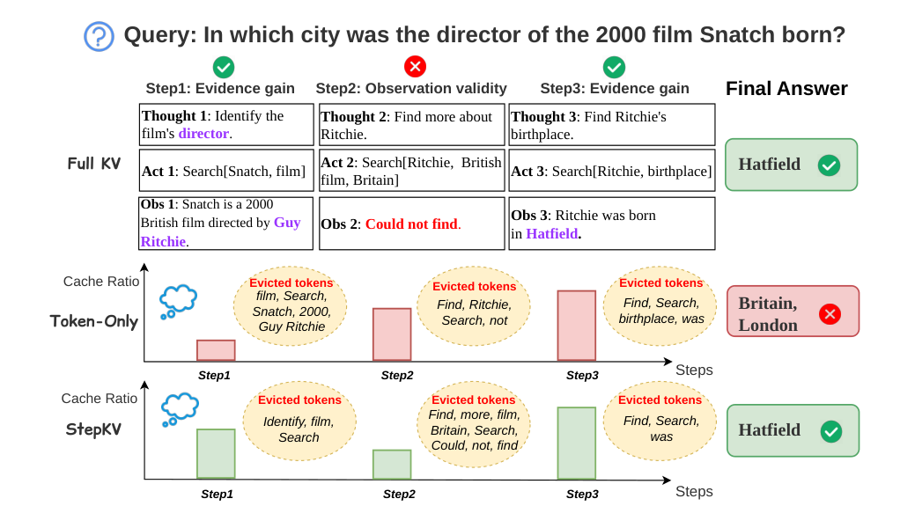

Why it matters왜 중요한가
Agents are where context grows fastest — and where the unit of meaning is a step, not a token.
컨텍스트가 가장 빨리 불어나는 곳은 에이전트다. 그리고 거기서 의미의 단위는 토큰이 아니라 스텝이다.
One question turns into a chain of thoughts, tool calls and retrieved pages; on BrowseComp-Plus a trajectory can pass 100K tokens. Classic eviction assumes "what gets attention now matters later". Agents break that: the director's name found in step 1 gets little attention during step 2's failed search, then is needed again in step 3. The authors call this Reasoning Continuity Disruption. For this archive, it is a bridge between the multi-agent/agent-memory thread and the KV-compression thread: the cache is being managed by the structure of the agent's reasoning, not by attention alone.
질문 하나가 생각·도구 호출·검색 결과의 사슬로 불어난다. BrowseComp-Plus에서는 궤적 하나가 100K 토큰을 넘기도 한다. 고전적인 축출은 "지금 어텐션을 받는 게 나중에도 중요하다"고 가정한다. 에이전트는 이 가정을 깬다. 1스텝에서 찾은 감독 이름은 2스텝의 실패한 검색 동안 어텐션을 거의 못 받다가, 3스텝에서 다시 필요해진다. 저자들은 이를 Reasoning Continuity Disruption(추론 연속성 단절)이라 부른다. 이 아카이브에선 멀티에이전트·에이전트 메모리 흐름과 KV 압축 흐름을 잇는 논문이다. 캐시를 어텐션만이 아니라 에이전트 추론의 구조로 관리한다.

By the numbers핵심 숫자
When the budget gets tight예산이 빠듯해지면
| Method | Budget | HotpotQA | 2WikiMQA | MuSiQue |
|---|---|---|---|---|
| Full KV | 100% | 26.40 | 24.20 | 5.13 |
| H2O | 20% | 1.53 | 1.07 | 0.00 |
| TOVA | 20% | 0.73 | 1.47 | 0.07 |
| StepKV | 20% | 18.07 | 13.47 | 2.80 |
| StepKV | 50% | 23.23 | 22.67 | 7.27 |
In one diagram한 장의 그림
The idea in three pieces아이디어를 셋으로 쪼개면
Compress in the unit you reason in추론하는 단위로 압축한다
Token-level eviction treats the cache as a flat stream. But an agent's evidence arrives and is reused a step at a time, and a step's value is uneven and often delayed. Figure 2 in the paper shows H2O and TOVA wiping out early-step cohorts within a few steps, while StepKV keeps a stable share of prior-step tokens.
토큰 단위 축출은 캐시를 평평한 흐름으로 본다. 하지만 에이전트의 증거는 스텝 단위로 들어오고 스텝 단위로 다시 쓰이며, 스텝의 가치는 고르지 않고 흔히 뒤늦게 드러난다. 논문의 Figure 2는 H2O와 TOVA가 몇 스텝 만에 초기 스텝 토큰 묶음을 쓸어내는 반면, StepKV는 이전 스텝 토큰의 몫을 안정적으로 지킨다는 걸 보여 준다.
Two clocks for step value스텝 가치의 두 시계
Utility has an immediate part set when the step closes (valid, novel, non-repetitive) and a delayed part that grows when later observations echo it. The log and clipping keep long trajectories from inflating old steps without bound. Ablations on MuSiQue show each of the four cues matters (−2.4 to −3.4 EM each on Qwen).
효용에는 스텝이 끝날 때 정해지는 즉시 부분(쓸 만한가, 새로운가, 반복이 아닌가)과, 나중 관찰이 그 내용을 되풀이할 때 커지는 지연 부분이 있다. 로그와 클리핑이 긴 궤적에서 옛 스텝 점수가 끝없이 부풀지 않게 막는다. MuSiQue 절제 실험에서 네 단서 각각이 효과가 있다(Qwen에서 각 −2.4~−3.4 EM).
A bias, not a lock잠금이 아니라 기울기
No step is permanently protected. Step utility is bounded, so it mainly breaks ties between tokens of similar attention; a token with much higher attention still wins. Figure 7 finds intermediate β best — step-only or token-only both do worse, and Table 3 shows removing either signal hurts.
어떤 스텝도 영구 보호되지 않는다. 스텝 효용에는 상한이 있어서, 주로 어텐션이 비슷한 토큰들 사이의 우열을 가른다. 어텐션이 훨씬 큰 토큰은 여전히 이긴다. Figure 7에선 중간 β가 가장 좋다. 스텝만 쓰거나 토큰만 쓰면 둘 다 나쁘고, Table 3에선 어느 신호를 빼도 성능이 떨어진다.
How it works어떻게 작동하나
- Finish the step first.스텝을 먼저 끝낸다. The agent generates Thought and Action, runs the tool, appends the Observation — no eviction mid-step. 에이전트가 Thought와 Action을 만들고, 도구를 돌리고, Observation을 붙인다. 스텝 도중엔 축출하지 않는다.
- Score it.점수를 매긴다. Compute validity, evidence gain and action redundancy against all earlier steps to get rk; start its reuse counter at 0. 이전 모든 스텝과 비교해 유효성·증거 획득·행동 중복을 계산해 rk를 얻고, 재사용 카운터는 0에서 시작한다.
- Update the past.과거를 갱신한다. Compare the new observation with each old one and add capped reuse credit; recompute every Sk. 새 관찰을 옛 관찰 각각과 비교해 상한이 있는 재사용 점수를 더하고, 모든 Sk를 다시 계산한다.
- Select and evict.고르고 버린다. Take attention saliency Ti (from the prefill already done), form Pi = αTi + βSk, keep the top ⌊ρNt⌋ trajectory tokens, drop the rest. 이미 끝난 prefill에서 어텐션 중요도 Ti를 가져와 Pi = αTi + βSk를 만들고, 궤적 토큰 중 상위 ⌊ρNt⌋개만 남긴다.
What to take away그래서, 가져갈 것
For agents, when you prune may matter as much as what you prune. Evicting only at step boundaries keeps each step internally coherent; under the same keep ratio, token-only methods can even miss their expected cache savings, because the derailed agent loops and generates more.
에이전트에선 무엇을 버리느냐만큼 언제 버리느냐가 중요할 수 있다. 스텝 경계에서만 축출하면 각 스텝 안이 온전하다. 같은 유지 비율에서도 토큰 단위 방법은 기대한 캐시 절감을 놓치기도 한다. 길을 잃은 에이전트가 맴돌며 더 많이 생성하기 때문이다.
Cheap symbolic signals from the agent loop (tool failed? action repeated? evidence echoed later?) are a strong prior for cache value — and they are free, unlike another attention pass. The same idea should carry to latent multi-agent setups that relay KV caches between agents.
에이전트 루프에서 나오는 값싼 기호적 신호(도구 실패? 행동 반복? 증거가 나중에 되풀이됨?)는 캐시 가치에 대한 강한 사전 정보다. 어텐션을 한 번 더 계산하는 것과 달리 공짜다. 에이전트끼리 KV 캐시를 전달하는 잠재 멀티에이전트 설정에도 같은 발상이 통할 것이다.
Deeper trajectories are harder for everyone (Figure 6), which is exactly where cross-step dependence piles up. Benchmarks for agent KV compression should report accuracy by step count, not just an average.
궤적이 깊을수록 모두에게 어렵다(Figure 6). 바로 스텝 간 의존이 쌓이는 곳이다. 에이전트 KV 압축 벤치마크는 평균만이 아니라 스텝 수별 정확도를 보고해야 한다.